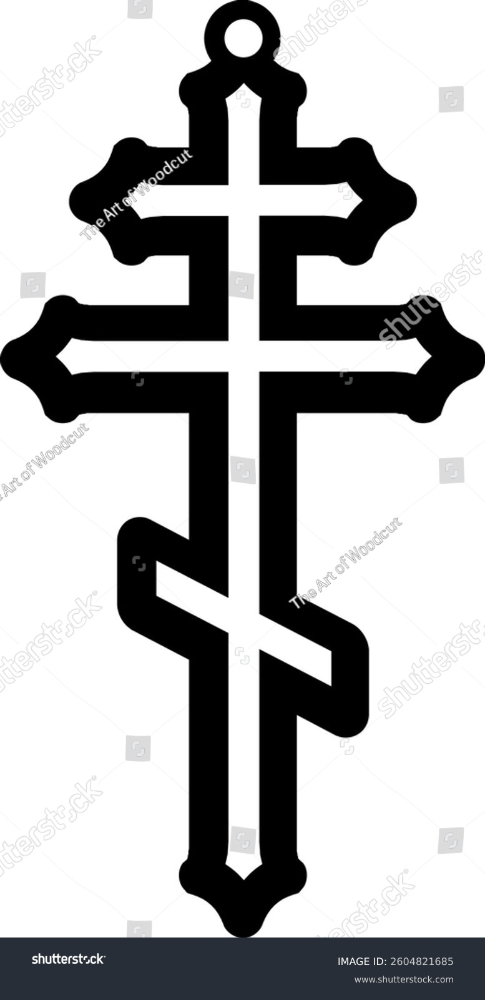
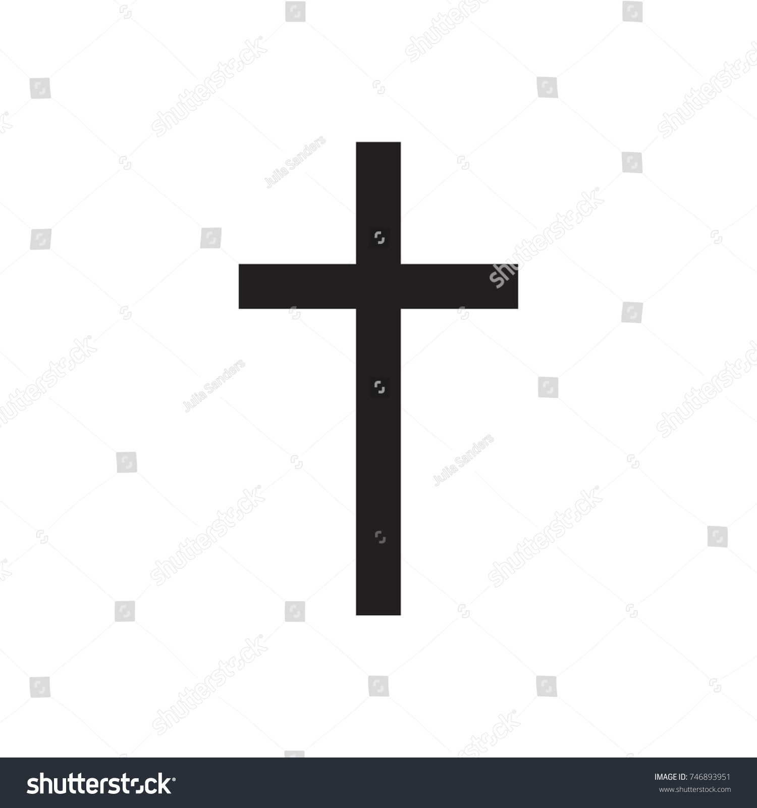

Read the bible Learn about the catholic church Learn about the orthodox churchMay this website fill you with hope and remind you of our beloved god who saved us and stays with us forever.


The Lord is my rock, my fortress and my deliverer; my God is my rock, in whom I take refuge, my shield and the horn of my salvation, my stronghold.
Psalm 18:2
It is time! Open your random bible verse and read the bible today.
May god inspire and guide you everyday
GeneratorCopyright © Antekem15